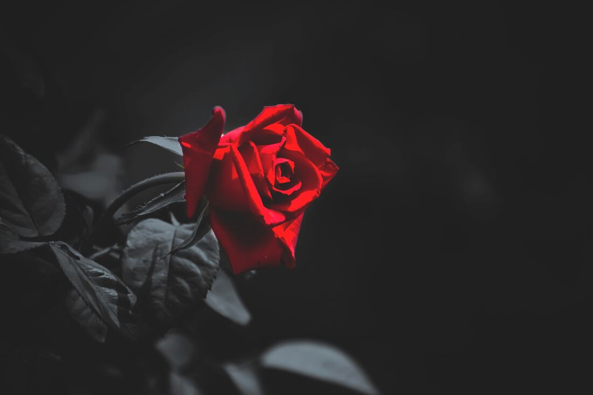
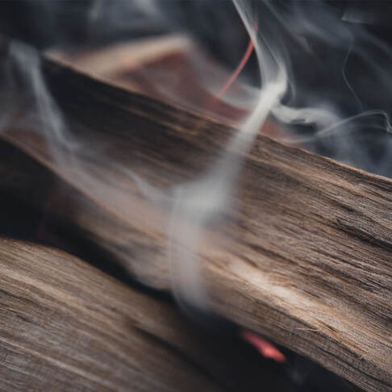
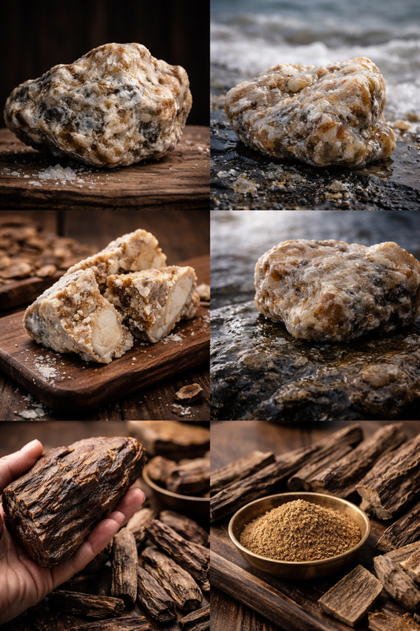

01 / THE IDEA
剎那與
永恆
我們總是對於剎那間會消失的，抱持一種特有的感情，想要留住也害怕失去，也之所以會更珍惜。花與香氣，正是寄情於此的典型代表。
認識品牌與工藝 ↗
03 / COLLECTION
精選產品

SKYODOR / 蝶漾香韻

01 / THE IDEA
我們總是對於剎那間會消失的，抱持一種特有的感情，想要留住也害怕失去，也之所以會更珍惜。花與香氣，正是寄情於此的典型代表。
認識品牌與工藝 ↗
03 / COLLECTION

SKYODOR / 蝶漾香韻